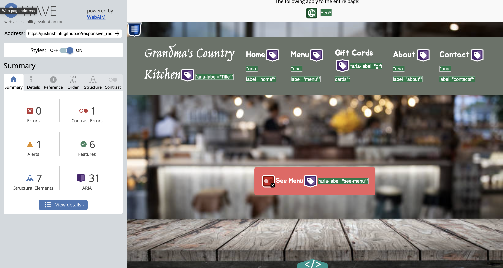

The main purpose of this project is to practice the workflow of redesigning a simple website. Through this three-week process, we first chose a website that might have usability problems—meaning that the website is difficult to use. Then, in the first week, we focused first and making sketches and Lo-fi wireframes to create our initial designs. The second week, we focused on Hi-Fi Mockups and creating a Style Guide. Finally, in the last week, we used HTML/CSS to create a redesigned, responsive website. Therefore, through this process, I was able to learn how to redesign a website completely from scratch: starting from initial sketches to a fully redesigned website. The following sections below detail my thoughts on the entire process!
The website I chose is Grandma's Country Kitchen which is a local restaurant in my hometown. The screenshots for the website are below:
The reason I chose this website is because the website is painfully basic with a ton of needless information cluttered in the middle of the screen, but this is one of my favorite restaurants in my hometown of Bremen, GA, so I thought it would be cool to redesign the website for a restaurant that I grew up eating out at.
These are my observations on the website for Grandma's Country Kitchen.
Overall, through this redesign, I hope to add a menu section and clear up the amenities section to make it more intuitive to the user when navigating through the interface.
Above is a screenshot of the WebAIM WAVE report that outlines that there are 12 contrast errors in the interface. Specifically, this has to do with the size and color of text throughout the interface. I agree that this will lead to accessibility concerns for individuals with visual impairment because this low contrast would make it harder to see certain information. Specifically, the amenities section will be extremely difficult for visually impaired users to navigate as there is just so much cluttered information centered on the screen. Therefore, an important part of my redesign will be increasing the size of the text and making sure that there is a high contrast between the text and the background.
This section included setting a timer for 9 minutes and doing one possible sketch for the interface each minute. This forced me to think out of the box, and it was pretty difficult to think of designs each minute, but the following results are below!
Below is my final sketch combining different elements of my sketches above.
The screenshots for my low-fidelity wireframes are listed below. These Lo-Fi wireframes were created with Figma, and the three modes are Desktop, Tablet, and Phone specifically.
For my visual design guide, I placed my guide on the same page as my Desktop layout in my Figma file here. Additionally, I've attached a screenshot below:
Using the Visual Design Guide above, I came up with the following high-fidelity mockups that I will use for my responsive re-design implementation. They can be found in my Figma file here , or I've attached screenshots below. The main things that I incorporated is changing up the colors, adding in new icons, setting specific font styles, and planning out hover animations in the future.
For this part, using all of the sketches, lo-fi wireframes, and hi-fi prototypes that I created before, I redesigned Grandma's Country Kitchen using HTML/CSS. While it isn't fully interactive, the main overall design and layout of the website is included. Additionally, it's important to note that the final design wasn't exactly the same as the final mockup which can happen in the development phase, but for the most part, the final redesign reflects the hifi-prototypes. Additionally, when testing accessibility, I have the following screenshot of the WebAIM WAVE report.  While there is just one contrast error due to the "see menu" button, for the most part, there aren't any major errors detected. Additionally, to try to make this website accessible to screenreaders, I've included 31 aria-labels throughout my HTML. Click on the buttons below to see the difference!
Photos of the three modes, Desktop, Tablet, and Phone, illustrate how Grandma's Country Kitchen is now responsive!
Thank you so much!!